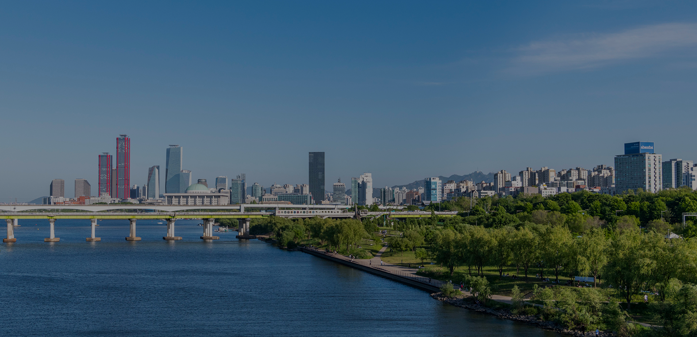
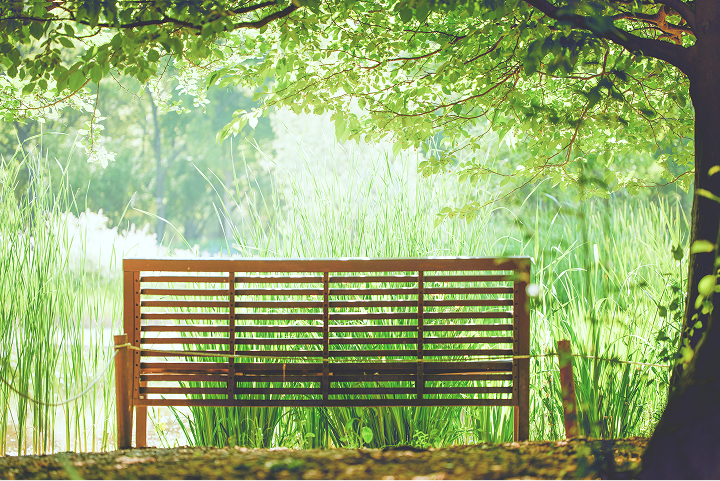
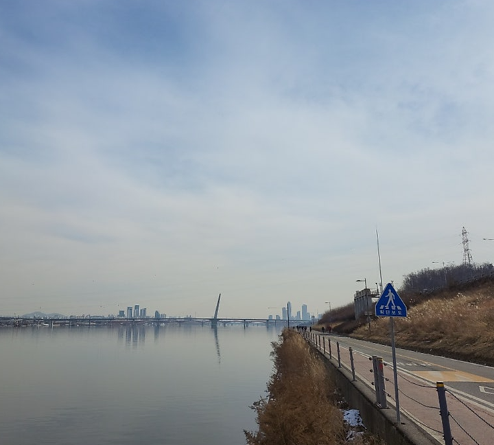

#Real한강뷰 #힐링타임 #커피타임

점심 식사 후 노곤한 몸을 이끌고,
모니터 화면만을 보면서 무미건조해진 눈을 위해,
점심시간을 이용해 잠시 잠깐의 힐링 하고 싶을 때가 있잖아요.
오전 11시 30분
가벼운 마음으로 1층에서 커피 한 잔을
사서 가벼운 마음으로 염강나들목 향해 걸어 갑니다

한 눈에 다 담을 수 없는 탁 트인 한강뷰
터널을 빠져나오자마자 부는 강바람이
무거웠던 마음까지 가볍게 날려주는 기분입니다.
멀리서 들려오는 자전거 소리 마저 배경음악처럼 들리는 오후
누구에게나 이런 잠깐의 힐링,
필요하잖아요.
#Real한강뷰 #힐링타임 #커피타임